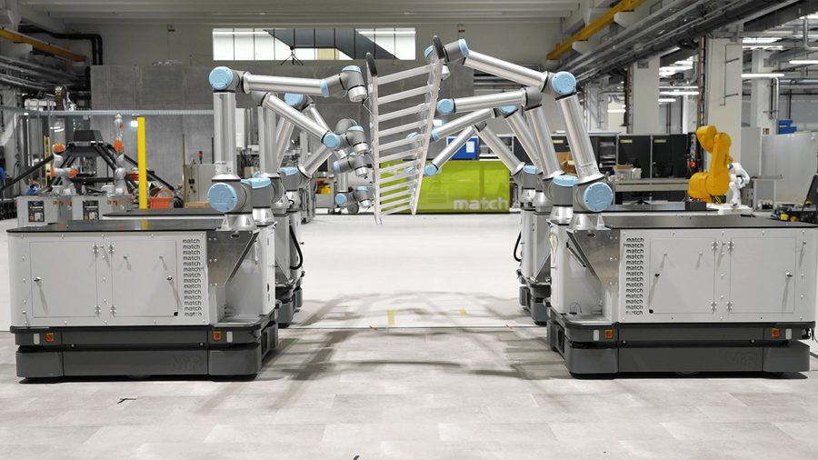
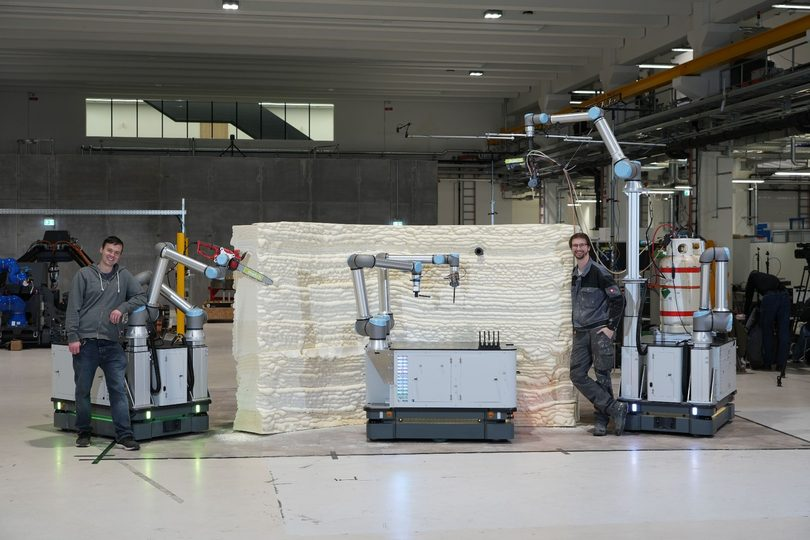
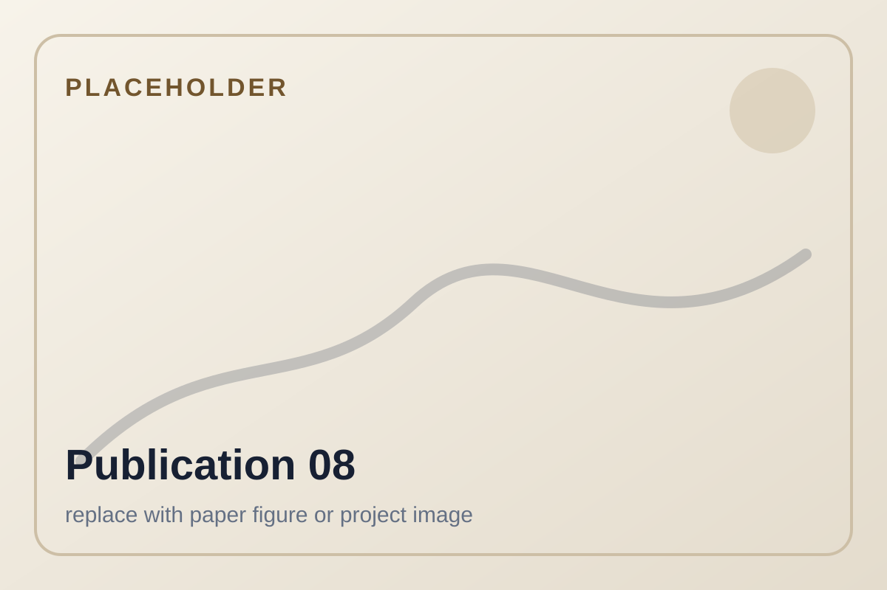
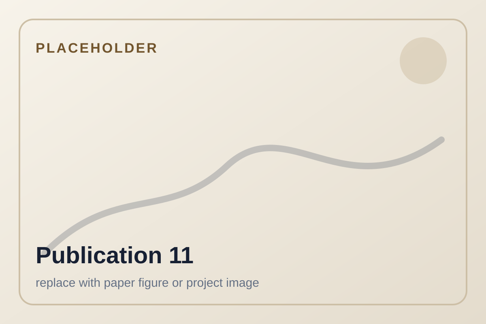

Home
Dr.-Ing. Tobias Recker
I develop scalable cooperative mobile multi-robot systems for industrial handling, assembly, and construction automation.
I design control, trajectory planning, and system integration approaches for tightly coupled robotic cooperation. My focus is on tasks where multiple mobile robots handle one common object and where no individual robot could complete the task alone, even given unlimited time.
Research focus
My work is centered on tightly coupled cooperation between mobile robots. I focus on scenarios where several robots handle one common object and coordinate their motion so closely that the task only exists as a team task. This is especially relevant for broad task spectra in which highly specialized robots would be expensive, underutilized, and difficult to justify.
Cooperative mobile multi-robot systems
Scalable control frameworks for mobile robots and mobile manipulators that jointly transport, handle, and assemble large-scale components.
Mobile manipulation and control
Coordination of mobile platforms and robotic arms, including formation control, trajectory planning, and whole-body control.
Automation for construction and production
Robotic automation for flexible manufacturing, large-scale assembly, and mobile additive manufacturing.
Featured projects

Cooperative object handling
Multiple mobile manipulators jointly grasp and move one common object in a spatial workspace.

Cooperative object transport
Mobile platforms coordinate formation motion to transport large industrial components.

Print-while-drive additive manufacturing
A mobile manipulator coordinates platform and arm motion for continuous large-scale additive manufacturing.
Project gallery
A visual overview of selected demonstrators and experimental setups.
Selected publications
Offline platform trajectory planning for print-while-drive additive manufacturing using mobile manipulators
Lukas Lachmayer, Tobias Recker, Hauke Heeren, Pitt Müller, Annika Raatz. 2025 IEEE 21st International Conference on Automation Science and Engineering (CASE), Los Angeles, CA, USA, pp. 1411-1416.
A Comparative Analysis of Different Semi-Rigid Formation Geometries Regarding Multi-Robot Cooperative Object Transport for Large-Scale Objects
Tobias Recker, Henrik Lurz, Lukas Lachmayer, Annika Raatz. IEEE International Conference on Automation Science and Engineering (CASE), 2024.
Design of a 6 DoF Multi-Robot Platform for Automated Multistory Valet Parking
Moritz Springer, Tobias Recker, David Schütz, Annika Raatz. 2024 IEEE International Conference on Cybernetics and Intelligent Systems and IEEE International Conference on Robotics, Automation and Mechatronics, Hangzhou, China, pp. 290-296.


Inline image-based reinforcement detection for concrete additive manufacturing processes using a convolutional neural network
Lukas Lachmayer, Leon Dittrich, Tobias Recker, Ronald Dörrie, Harald Kloft, Annika Raatz. Proceedings of the International Symposium on Automation and Robotics in Construction (ISARC), 2024.

Dissertation
Scaling of Cooperative Mobile Multi-Robot Systems for Handling and Assembly of Large-Scale Components
My dissertation investigates a scalable CMMRS framework for collaborative object handling and assembly tasks in industrial settings. It combines a hardware-agnostic control structure with path planning and experimental validation across transport, handling, and assembly-related scenarios.